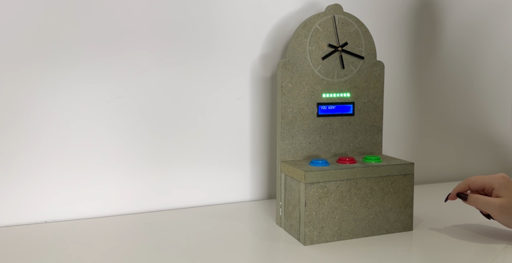
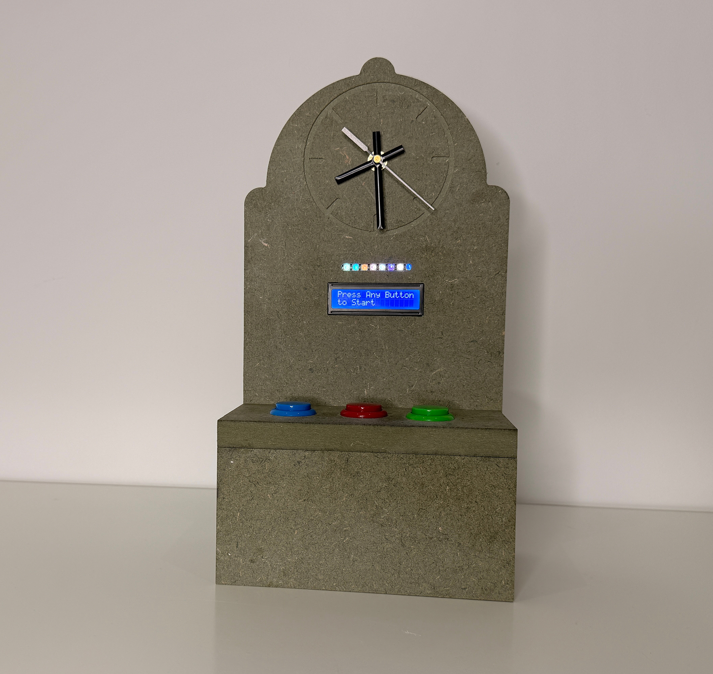
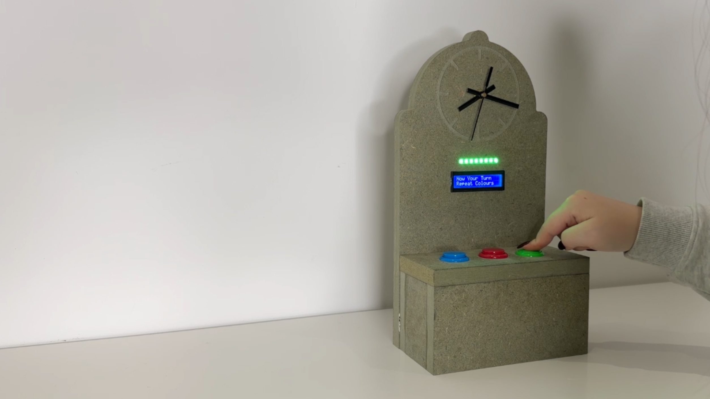
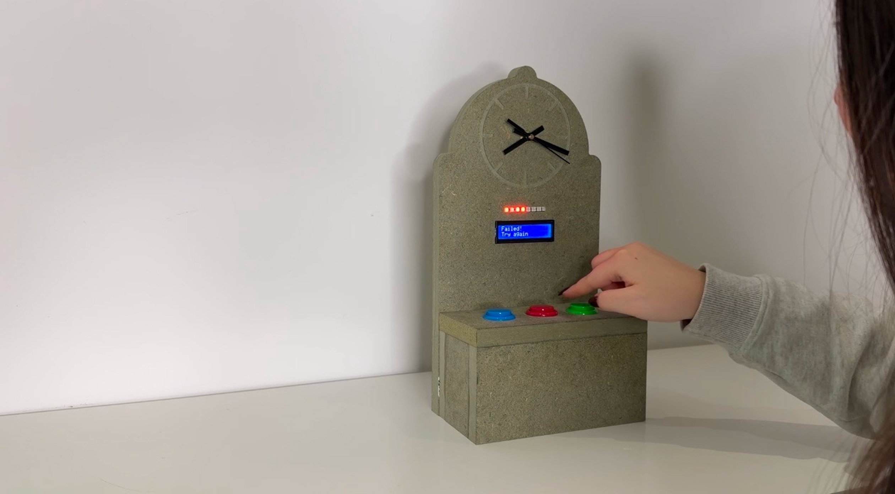
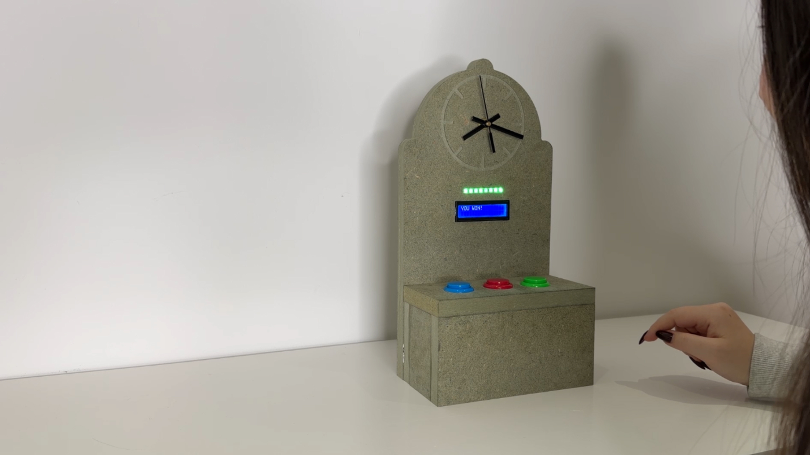

Personal Project
Time Arcade Machine
Language
C/C++
Year
2025
Hardware
Arduino · NeoPixel LED strip · LCD display · Arcade buttons · Custom-built enclosure
Real-time embedded system exploring time perception.
TimeTemper is a real-time arcade system where users memorise and reproduce colour sequences under changing speed conditions. The system evaluates input timing and accuracy to control progression across stages. Each round increases difficulty by adjusting speed and sequence complexity.
The project explores how people experience the same amount of time differently due to individual differences in internal clock pace. It shows that the same duration can feel significantly shorter or longer depending on the person.
System Logic



